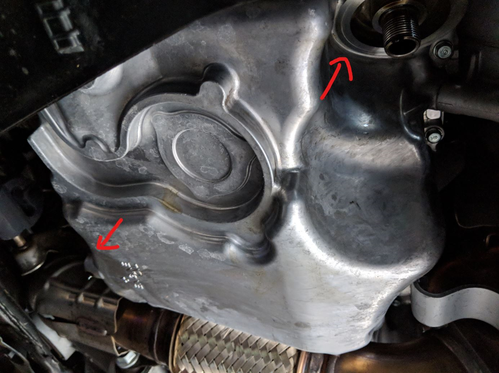

Engine oil change

Description
In this page, we will go over how to perform an oil change on fk8 type r
Things you will need
- 17mm socket
- crush washer
- replacement oil filter
- 0w-20 Full full synthetic oil
- flat head and phillips screwdriver
Steps
- remove the metal panel

- remove drain plug and drain oil
- replace crush washer and retighted drain plug to spec
- remove and replace oil filter
- pour 5 qt of oil into engine and let it warm up, then check for oil level
main